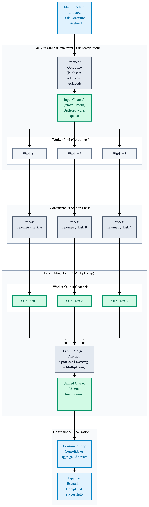
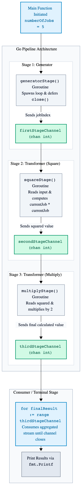
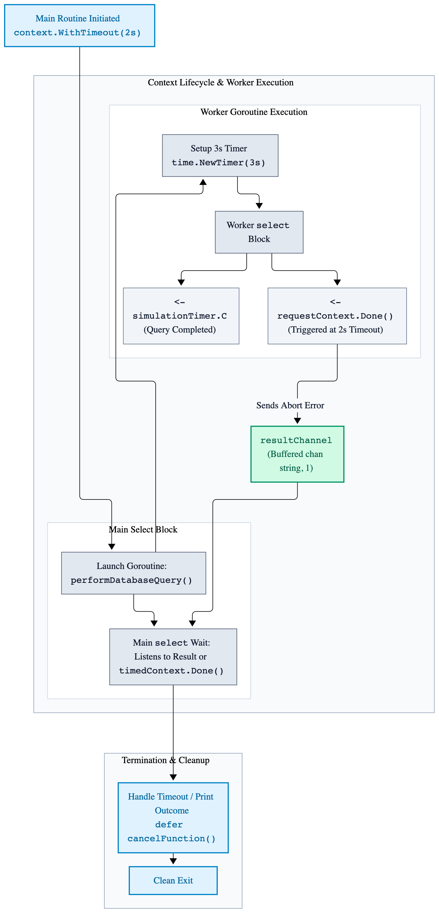
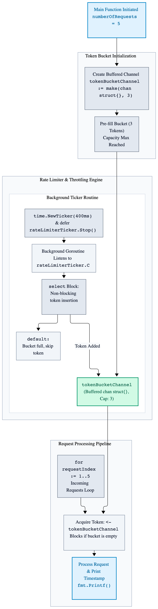

Chapter 5: Advanced Concurrency Patterns
Building upon the Go M:N Scheduler (GMP model) and core primitives (goroutines and channels), advanced concurrency patterns allow you to build robust, scalable, and high-performance concurrent applications. This guide covers essential patterns, implementation strategies, and best practices for avoiding common pitfalls like goroutine leaks and race conditions.
5.1 Worker Pool Pattern
When dealing with a massive number of tasks (e.g., thousands of incoming HTTP requests or file processing jobs), spawning a new goroutine for every single task can overwhelm the scheduler and exhaust memory. A Worker Pool limits the number of concurrently executing goroutines to a fixed pool size.
package main
import (
"fmt"
"sync"
"time"
)
func worker(workerIndex int, jobChannel <-chan int, resultChannel chan<- int, waitGroup *sync.WaitGroup) {
defer waitGroup.Done()
for currentJob := range jobChannel {
fmt.Printf("Worker %d started job %d\n", workerIndex, currentJob)
time.Sleep(time.Millisecond * 500) // Simulate heavy work.
resultChannel <- currentJob * 2
fmt.Printf("Worker %d finished job %d\n", workerIndex, currentJob)
}
}
func main() {
const numberOfJobs = 5
const numberOfWorkers = 3
jobChannel := make(chan int, numberOfJobs)
resultChannel := make(chan int, numberOfJobs)
var waitGroup sync.WaitGroup
// Start workers.
for workerIndex := 1; workerIndex <= numberOfWorkers; workerIndex++ {
waitGroup.Add(1)
go worker(workerIndex, jobChannel, resultChannel, &waitGroup)
}
// Send jobs.
for jobIndex := 1; jobIndex <= numberOfJobs; jobIndex++ {
jobChannel <- jobIndex
}
close(jobChannel) // Signal workers that no more jobs are coming.
// Wait for all workers to finish and close results.
waitGroup.Wait()
close(resultChannel)
// Collect results.
for processedResult := range resultChannel {
fmt.Printf("Result: %d\n", processedResult)
}
}Figure 5.1: Worker Pool Concurrency Architecture

5.2 Fan-Out / Fan-In Pattern
- Fan Out: Multiple goroutines read concurrently from a shared input channel. Go's channel semantics naturally handle load distribution: whichever worker becomes available first grabs the next available unit of work from the queue. This prevents bottlenecks and maximizes throughput.
- Fan In: Multiple discrete output channels produced by individual workers are merged into a single consolidated channel. This allows a downstream consumer to range over a single unified stream without needing to manage multiple channels manually.
package main
import (
"fmt"
"sync"
"time"
)
// generator creates the initial stream of raw data (Fan-Out source).
func generator(numberOfJobs int) <-chan int {
outChannel := make(chan int, numberOfJobs)
go func() {
defer close(outChannel)
for jobIndex := 1; jobIndex <= numberOfJobs; jobIndex++ {
outChannel <- jobIndex
}
}()
return outChannel
}
// worker processes items from the input channel (Fan-Out workers).
func worker(workerIndex int, inputStream <-chan int) <-chan int {
outputStream := make(chan int)
go func() {
defer close(outputStream)
for currentJob := range inputStream {
fmt.Printf("Worker %d processing job %d\n", workerIndex, currentJob)
time.Sleep(time.Millisecond * 400) // Simulate processing time.
outputStream <- currentJob * 2 // Transformation step.
}
}()
return outputStream
}
// merge multiplexes multiple worker channels into a single unified channel (Fan-In).
func merge(channels ...<-chan int) <-chan int {
var waitGroup sync.WaitGroup
unifiedStream := make(chan int)
// Internal function to copy values from a worker channel to the unified stream.
output := func(ch <-chan int) {
defer waitGroup.Done()
for value := range ch {
unifiedStream <- value
}
}
waitGroup.Add(len(channels))
for _, channel := range channels {
go output(channel)
}
// Goroutine to close the unified stream once all workers have finished.
go func() {
waitGroup.Wait()
close(unifiedStream)
}()
return unifiedStream
}
func main() {
const numberOfJobs = 6
const numberOfWorkers = 3
// 1. Setup Producer Stage.
rawJobs := generator(numberOfJobs)
// 2. Fan-Out: Spawn multiple worker goroutines reading from the same input.
var workerChannels []<-chan int
for workerIndex := 1; workerIndex <= numberOfWorkers; workerIndex++ {
workerChannels = append(workerChannels, worker(workerIndex, rawJobs))
}
// 3. Fan-In: Merge all worker output channels into a single stream.
finalResults := merge(workerChannels...)
// 4. Consume the unified stream.
for processedResult := range finalResults {
fmt.Printf("Received Result: %d\n", processedResult)
}
}5.3 Pipeline Pattern
A pipeline is a series of stages connected by channels, where each stage is a group of goroutines running the same function. Data flows downstream through each transformation step.
package main
import (
"fmt"
)
// generatorStage produces the initial stream of numbers.
func generatorStage(numberOfJobs int) <-chan int {
outChannel := make(chan int)
go func() {
// Ensure the channel closes when the generator finishes sending jobs.
defer close(outChannel)
for jobIndex := 1; jobIndex <= numberOfJobs; jobIndex++ {
outChannel <- jobIndex
}
}()
return outChannel
}
// squareStage reads numbers from the input channel, squares them, and sends them downstream.
func squareStage(inputStream <-chan int) <-chan int {
outChannel := make(chan int)
go func() {
// Ensure the output channel closes when all input values are processed.
defer close(outChannel)
for currentJob := range inputStream {
outChannel <- currentJob * currentJob
}
}()
return outChannel
}
// multiplyStage reads squared numbers, multiplies them by two, and sends them downstream.
func multiplyStage(inputStream <-chan int) <-chan int {
outChannel := make(chan int)
go func() {
// Ensure the output channel closes when all input values are processed.
defer close(outChannel)
for currentJob := range inputStream {
outChannel <- currentJob * 2
}
}()
return outChannel
}
func main() {
const numberOfJobs = 5
// Stage 1: Generate the raw input data stream.
firstStageChannel := generatorStage(numberOfJobs)
// Stage 2: Transform raw numbers by squaring them.
secondStageChannel := squareStage(firstStageChannel)
// Stage 3: Transform squared numbers by multiplying them by two.
thirdStageChannel := multiplyStage(secondStageChannel)
// Consume and print the final results from the pipeline terminal.
for finalResult := range thirdStageChannel {
fmt.Printf("Pipeline Result: %d\n", finalResult)
}
}Figure 5.3: Multi-Stage Data Pipeline Architecture

5.4 Context Cancellation & Timeout Propagation
Using the context package is vital for controlling execution lifecycles.
It ensures that when a parent operation is canceled, times out, or fails, all child goroutines
are instantly notified to abort their work and free up resources.
package main
import (
"context"
"fmt"
"time"
)
// performDatabaseQuery simulates a long-running operation that respects context cancellation.
func performDatabaseQuery(requestContext context.Context, operationDuration time.Duration, resultChannel chan<- string) {
// Simulate work using a time delay channel.
simulationTimer := time.NewTimer(operationDuration)
defer simulationTimer.Stop()
select {
case <-requestContext.Done():
// The context was canceled, timed out, or parent finished. Abort work immediately.
resultChannel <- fmt.Sprintf("Operation aborted: %v", requestContext.Err())
return
case <-simulationTimer.C:
// The operation completed successfully before any timeout occurred.
resultChannel <- "Operation completed successfully."
return
}
}
func main() {
// Define a timeout duration for the operation lifecycle.
const operationTimeout = time.Second * 2
// Create a parent background context.
parentContext := context.Background()
// Derive a child context that automatically cancels after the specified timeout.
timedContext, cancelFunction := context.WithTimeout(parentContext, operationTimeout)
// Ensure resources associated with this context are released when main exits.
defer cancelFunction()
// Create a channel to receive the operation result.
resultChannel := make(chan string, 1)
// Simulate a task that takes longer than the timeout threshold (e.g., 3 seconds).
const simulatedWorkDuration = time.Second * 3
// Launch the worker goroutine passing the timed context.
go performDatabaseQuery(timedContext, simulatedWorkDuration, resultChannel)
// Wait for either the operation result or the context cancellation signal.
select {
case operationResult := <-resultChannel:
// Print the outcome received from the worker goroutine.
fmt.Println(operationResult)
case <-timedContext.Done():
// Handle the timeout event triggered by the context deadline.
fmt.Printf("Main routine detected timeout: %v\n", timedContext.Err())
}
// Give background goroutines a brief moment to clean up logs before termination.
time.Sleep(time.Millisecond * 100)
}Figure 5.4: Context Cancellation & Timeout Propagation

5.5 Rate Limiting & Throttling
Controlling throughput prevents services from being overwhelmed. Using time.Ticker
or buffered channels enables leaky bucket or token bucket rate limiting.
package main
import (
"fmt"
"time"
)
func main() {
const numberOfRequests = 5
// Create a buffered channel to hold available tokens for rate limiting.
tokenBucketChannel := make(chan struct{}, 3)
// Fill the token bucket initially up to its maximum capacity.
for tokenIndex := 0; tokenIndex < 3; tokenIndex++ {
tokenBucketChannel <- struct{}{}
}
// Start a background ticker to refill tokens at a fixed interval.
rateLimiterTicker := time.NewTicker(time.Millisecond * 400)
// Ensure the ticker resources are released when main exits.
defer rateLimiterTicker.Stop()
// Refill tokens concurrently in the background.
go func() {
for range rateLimiterTicker.C {
select {
case tokenBucketChannel <- struct{}{}:
// Successfully added a token back to the bucket.
default:
// Token bucket is already full, skip adding new token.
}
}
}()
// Simulate handling incoming requests subject to rate limiting.
for requestIndex := 1; requestIndex <= numberOfRequests; requestIndex++ {
// Wait to acquire a token from the bucket before processing the request.
<-tokenBucketChannel
fmt.Printf("Processing request %d at %v\n", requestIndex, time.Now().Format("15:04:05.000"))
}
}Figure 5.5: Token Bucket Rate Limiter Architecture

5.6 Best Practices & Common Pitfalls
- Never start a goroutine without knowing how it will stop. (Prevent goroutine leaks).
- Always close channels from the sender side, never the receiver side.
- Use the race detector (
go test -race/go run -race) during development and testing.
Key Takeaways
- Worker Pools: Bound resource consumption and prevent scheduler exhaustion by distributing tasks across a fixed set of persistent worker goroutines.
- Fan-Out / Fan-In: Maximize throughput by distributing load across multiple concurrent workers and cleanly merging their output streams into a single unified consumer channel.
- Pipelines: Structure multi-stage data transformations modularly using connected producer-consumer channels.
- Context Propagation: Propagate cancellation signals and strict deadlines down call stacks to eliminate zombie goroutines and wasted computation.
- Throttling & Rate Limiting: Use buffered channels as token buckets paired with tickers to control request ingestion rates smoothly.
- Safety & Diagnostics: Always define exit strategies for goroutines, close channels on the sender side, and run tests with the built-in race detector enabled.